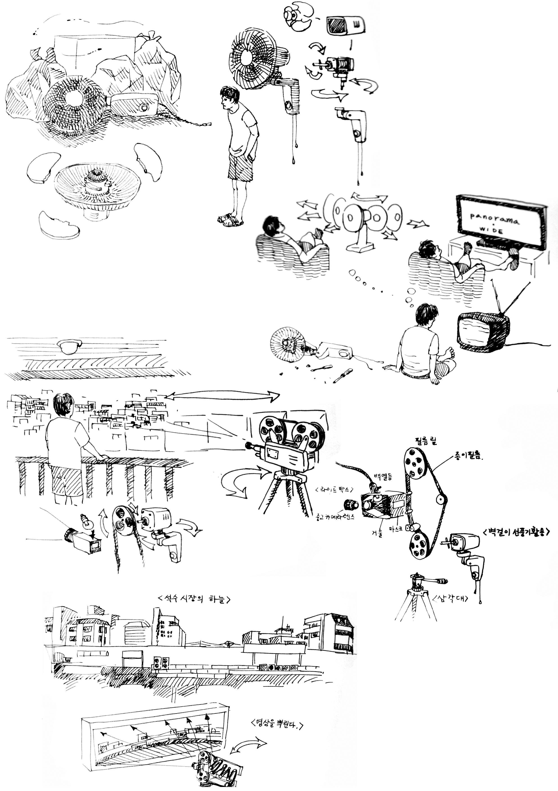

장소 만들기
저의 작업은 때때로 다음 작업의 재료가 되기 위해 만들어지곤 합니다.
이번 석수에서의 작업 계획은 풍경에 대한 몇가지 드로잉을 하고, 드로잉을 영상물로 제작하는 것, 마지막으로 영상물을 종이 필름 형태로 프린트하고 직접 반사식 영사기를 만들어 설치하는 것 까지 입니다. 제작하게 될 영사기는 버려진 벽걸이식 선풍기를 재활용하여 제작할 계획입니다. 그리고 선풍기의 횡방향 반회전 왕복운동(목이 돌아가며 바람을 곳곳에 뿌려주는....)을 활용하여 영상을 가로로 넓게 뿌려주는 영사기가 될 것 입니다.
운전대를 잡고 서울에서 안양으로 가는 도중 보게 되는 도로 설치물과 양옆으로 지나가는 거대한 구조물들, 장기판의 성 같은 재미난 구조의 석수시장, 그리고 안양천. 많은 구조물들이 저에게 '이곳에서 적응할 준비가 되었는가?' 하고 묻습니다.
'내가 저 풍경에 받아들여 질것인가?' 하는 느낌이 들었다면 아마도 저는 많은 오브젝트 들이 한 눈에 들어오는 시야가 넓은 곳에 있을 때 일겁니다. 아니면 자주, 오래 돌아다녀서 모든 풍경이 한 덩어리로 머리 속에서 편집 가능 해졌을 때도 그렇고요.
그리고 풍경에 대한 몰입을 도와주는 것들을 몇 가지 발견했을 때도 있겠지요.
이러한 풍경 인식과 과정들을 이번 작업을 통해 드러내 보고자 합니다.
Placement
My works are sometimes created to become materials for my next projects. The project I am working on in Seok-Su consists of making a few drawings of the scenery, transforming the drawings into a motion picture, and, lastly, printing the images of the motion picture onto paper films and installing a self-made reflective projector. I plan on using a thrown-away ceiling fan to make the projector. I will utilize the transverse constant 180 degree-rotation (the movement that scatters the wind to all directions as the fan's head rotates) and make the projector scatter the image horizontally.
The road signs and gigantic building structures that I see when I drive from Seoul to Anyang, the layouts of Anyang that resembles the castle on a chess board, and Anyang River ask me if I am ready to adapt to this place: ”Will I become a part of this scenery?” I might have asked this of myself when I was standing on a high ground with a wide view where many objects can be seen simultaneously. I felt this when, after becoming familiar with the scene, all the parts of the scenery assembled to become one in my head. I might also have thought thiswhen I discovered a few objects that help me concentrate on the scenery. I wish to show the audience through this project my perception of the scenery and the process through which this perception came to exist.